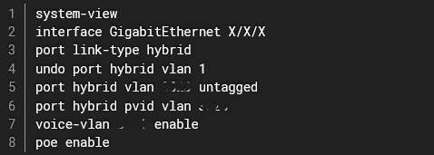

| Informations Complémentaires | |
|---|---|
| Outils : putty (SSH) | |
| Période : 10/06 - 24/06 | |
| Compétences Mises en Oeuvre | |
| - Gérer le patrimoine informatique | |
Cette mission consiste à remplacer les anciens téléphones cuivre par des téléphones IP dans un environnement de communication basé sur le logiciel MITEL. Cela implique des mises à jour sur le logiciel MITEL, ainsi que des ajustements sur les commutateurs réseau (VLAN, POE) pour assurer le fonctionnement des nouveau téléphones.
J'ai observé mon maître de stage effectuer cette étape. Il fallait créer une ligne sur le serveur MITEL et assigner l'utilisateur à cette ligne.
Une fois la ligne mise à jour, il faut configurer les commutateurs pour assurer le bon fonctionnement du téléphone. Les VLANs doivent être configurés pour séparer les flux de données et voix, tandis que le POE doit etre configuree pour que le telephone puisse avoir le courant necessaire a son fonctionnement.
La dernière étape de la mission consiste à installer les telephones dans les bureaux et les salles
J'ai beaucoup apprecie cette mission car elle m'a permis de me familiariser avec le bâtiment et les personnes qui y travaillent.